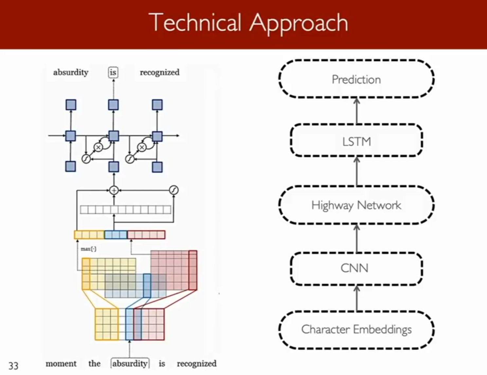

Summary of WordPiece/SentencePiece
BPE: Just uses the frequency of occurrences to identify the best match at every iteration until it reaches the predefined vocabulary size.
WordPiece: (Used in v1 of BERT) Similar to BPE and uses frequency occurrences to identify potential merges but makes the final decision based on the likelihood of the merged token
SentencePiece: (Used in v2 of BERT) Basically the same as wordpiece, but starts from the whole chunk of raw text, all text converted into unicode, with spaces encoded as “_”. This allows it to be language agnostic.
Unigram: (old) A fully probabilistic model which does not use frequency occurrences. Instead, it trains a LM using a probabilistic model, removing the token which improves the overall likelihood the least and then starting over until it reaches the final token limit. The LM probabillistic model aspect was taken and incorporated into BPE as wordpiece.

Interesting insights in to the effects of a character based model. The below table shows three models, and the list is the words that are most similar to the given word.
The last column can only be done well by the character level model.
Take-aways:
A best of both worlds architecture (“Char LSTM”):
2.2.1 Achieving Open Vocabulary Neural Machine Translation with Hybrid Word-Character Models (Luong and Manning ACL2016) - Pretty successful (+2 BLEU points)
At training time they decide on a vocabulary of 16000 words, and everything not in that vocabulary gets mapped to <unk>.
Run a standard seq2seq lstm (they actually used a 4 layer one for the encoder and 4 layers for the decoder) with attention.
But for all words that aren’t in the vocabulary, train a character level LSTM with the letters of the unknown word as input and the last hidden state is given to be the hidden state in the word-level representation. (I.e. Work out a char level representaiton of unkonw words using a character level LSTM)
Also, when we decode, we have a softmax with vocabulary of 16000, and if it generates <unk>, we take the representation of <unk> and feed it as the initial input to a decoder character level LSTM and then we have the character level LSTM generate a character seqeunce until it generates the STOP sequence.
(So there are 3 models: the encoder <unk> LSTM, the seq2seq encoder-decoder at the word level, and the decoder <unk> LSTM)
We add the loss of the word level model and both character level models during training.
The decoder uses word-level beam search and also a character level beam search for <unk>.
2.2.2 Hybrid NMT- “Char LSTM” (Luong and Manning 2016) in 2016 for 20.7 which was 2.5 BLEU points better than the SOTA at the time.
One disadvantage, is that the hybrid model doesnt have any representation. The purely character level model is able to use the character level sequence as the conditioning context very effectily, whereas in the hybrid model, although they feel the hidden state of the word level model as the starting hidden state of the character model , it doesn’t have any representation further back than that then what’s in teh word model, so it doesnt do as good of a job of capturing context that allows it to do translation with things like names. (Appendix 4)
See Appendix 3. Most of this has been Superseded by BERT Now.
To generate a unigram subword token set you need to first define the desired final size of your token set and also a starting seed subword token set. You can choose the seed subword token set in a similar way to BPE and choose the most frequently occurring substrings. Once you have this in place then you need to:
1. Work out the probability for each subword token
2. Work out a loss value which would result if each subwork token were to be dropped. The loss is worked out via an algorithm described in the paper (an expectation maximization algorithm).
3. Drop the tokens which have the largest loss value. You can choose a value here, e.g. drop the bottom 10% or 20% of subword tokens based on their loss calculations. Note you need to keep single characters to be able to deal with out-of-vocabulary words.
Most of this has been Superseded by BERT Now.
2.3.1 A Joint Model for Word Embedding and Word Morphology (Cao and Rei 2016)
2.3.2 FastText Embeddings - Enriching Word Vectors with Subword Information (Bojanowski, Grave, Joulin, Mikolov. FAIR 2016)
Aim: A next-generation efficient word2vec-like word representation library, but better for rare words and langauges with lots of morphology.
An extension of the w2v skip-gram model with character n-grams.
Represent word as char n-grams augmented with boundary sumbols and as whole word, so
where = <wh, the, her, ere, re>, <where>.
So ‘where’ is represented by the above 6 tokens. Recall that in word2vec, you have a center word representation and a context word representation and you learn these representations based on how often center words appear by context words. In this version, they train the system for center vectors corresopnding to all 6 of these representations, and then when they obtain final representations, sum the results.
So their word in context score is:
Note: (In actuality instead of sharing representaiton for all n-grams, they use a hashing trick to have a fixed number of vectors) That word embedding actually workds pretty successfully, only later overtaken by BERT.
Really just too much detail, but keep it around for refernece.
Some advantages and pitfalls of hybrid NMT Model.
The basic word based model was translating <unk> as po=after because when it sees an <unk> it will look at its attention head and get the source word that has the most attention from the <unk>, and either copy it or translate it as a unigram. Unfortunately, the <unk> was showing the most attention on ‘after’ rather than ‘diagnosis’ so what got translated is ‘after after’ and the word diagnosis is just lost. The hybrid model works beautifully.
One disadvantage, is that while the purely character level model is able to use the character level sequence as the conditioning context very effectily, in the hybrid model, although they feel the hidden state of the word level model as the starting hidden state of the character model, it doesn’t have any representation further back than that then what’s in they word model, so it doesnt do as good of a job of capturing context that allows it to do translation with things like names. The embedding for Shani was fed into the character level model, which had some sense that it was a name but not much else context, and unforuntaley generated G instead of S at the first step, resulting in a snowball that results in Graham.